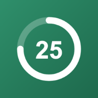

Box breathing — inhale 4s, hold 4s, exhale 4s, hold 4s. A quick reset between focus sessions.
Your stats are saved privately in your browser — no account needed.
Tap a task to make it active — each finished focus session adds a 🍅 to it.